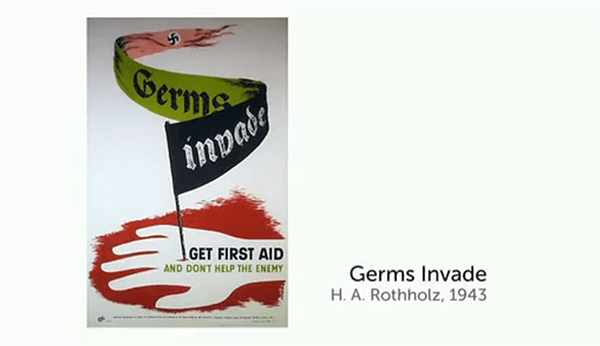

The Genius of Design III
Blueprints for War
- 
-
"Imagery, aesthetics, branding, call it whatever you like, the whole thing can be seen as an early extremely powerful and very sinister essay in what's now known as corporate identity."
形象化、美学追求、品牌效应，随便你怎么称呼它，这一切可被视为一场极具摧毁力而且邪恶无比的实验，而到现在，就演化为我们熟知的企业形象识别。
-
"But the British learned, for a need for survival by instinct partly, to tighten up the design process, to get rid of some of that beautiful craft."
英国人从那时明白，这种设计是源于某种生存本能，注重简化设计程序而放弃精致完美的手工艺。
-
"It was the first truly dynamic ultra-high speed modern warplane made of wood. The finest piece of furniture this country's ever built. Flying furniture! There are only four bolts which hold the fuselage and wing together. It was the first Stealth plane, because it was made of wood."
这是第一架性能强悍的超高速现代木质战机。它是整个国家有史以来最出色的家具产品，会飞的家具！机身和鸡翼仅靠四个螺钉就可固定到一起。它还是第一架隐形飞机，因为它是木制的。
-
-
"The messages may have been mundane, but they spoke the democratic language of the people's war and anticipated the egalitarian spirit of the Welfare State. They were graphic expressions of a new British identity that was being forged by war."
内容可能显得很普通，但它们在人类战争中发出了追求民主的声音并且表达出向福利国家呼吁平等的期望。它们是对新的在战争中形成的英国身份的平面化表达。
-
-
"German design excellence rendered irrelevant by Soviet mass mobilisation and American mass production. Design is a process, design is not style. The key that the Americans understood is just that. That when you set out to design any object, whether it's a gun, an aircraft, a ship, a locomotive, a uniform, a pair of shoes, you think of not just the end product, what it's going to look like, you think of how you're going to make the thing."
德国完美的设计在苏联的全民生产和美国的大规模生产免签也显得无力。设计是一个流程，而不仅仅是某种风格。问题的关键就在于，美国人看清了这一点，当你开始着手设计某样产品，无论是枪、飞机、轮船、火车头、制服或者鞋子，你不能仅仅考虑最终的环节——产品的外形如何，你还要考虑整个生产流程应该是怎样的。
-
-
"The 'Chair of the Century', What happened in the war years to design ,it was reborn. And that ability to make things over and over and over agian, but make them very well, really did tell somrthing about the ability to do things in great number. And for me, it is the thing that opens up what mass production allows in product design today."
这把“世纪之椅”，将战争年代的设计思想以崭新的面目示人。那种将产品一再重复地大批量生产，但又兼顾质量的能力，真正教会了我们什么才是真正意义上的大数量。对我而言，正式这段历史，开启了今日批量生产进入设计领域的大门。